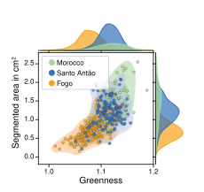

Ionomics
The plant elemental composition
Using ICP-MS analysis, I investigate the genetic and environmental factors underlying variation in plant nutrient homeostasis.
Example 1
Investigating chlorosis through phenotyping and ionomics.
Mineral nutrient imbalances can cause chlorosis, negatively affecting plant health and ultimately reducing yield. In this example, plants from a natural population originating from a volcanic island in Cape Verde developed chlorosis when grown in standard potting mix, despite appearing healthy in their native environment.
To investigate the chlorosis observed under greenhouse conditions, I developed an image-based phenotyping approach to quantify chlorosis across thousands of samples and performed ICP-MS analysis to characterize leaf elemental composition. These analyses revealed a pronounced imbalance between iron (Fe) and manganese (Mn) in plants grown in standard potting mix.


Example 2
Environmental association analyse
In this example, leaf magnesium (Mg) content exhibited a latitudinal cline across natural populations.
I used machine learning approaches to identify the genetic and environmental factors associated with this latitudinal variation in leaf Mg content.